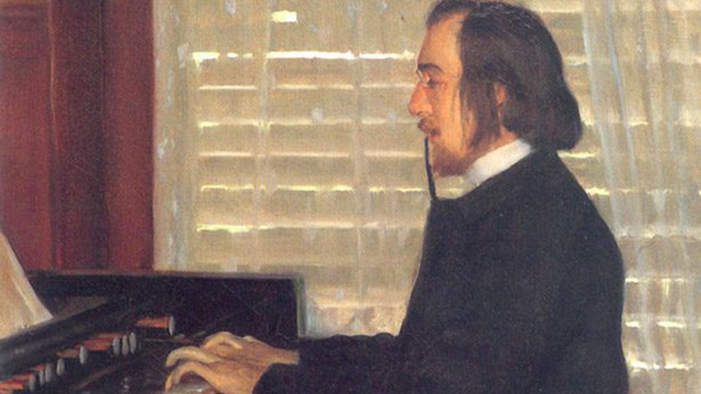

About Erik
Erik Satie was a French composer and pianist.
Painting of Erik Satie playing some kind of organ.
Facts About Erik
- Erik was a classy guy, wearing only gray suits and sometimes wearing a top hat.
- Erik walked ten miles everyday.
- Erik was friends and admired by Maurice Ravel and Claude Debussy.
- Owned two pianos which he had stacked on top of each other.
Erik's Compositions
Erik Satie composed hundreds of pieces spanning many genres, here are a few of his most popular.